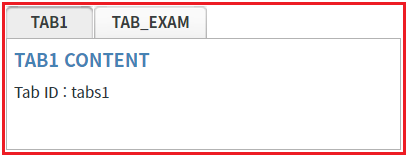
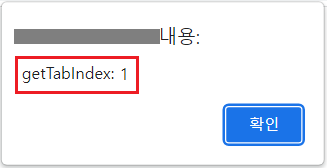
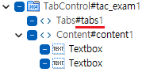

TabControl의 탭 ID로 탭의 Index를 반환받는 함수 'getTabIndex' 예시입니다.
탭의 ID로 탭의 Index 반환받기
STEP 1. 초기 상태를 확인합니다.
TabControl에 2개의 탭이 구성되어 있고, 각 탭의 ID는 다음과 같습니다.
탭 'TAB1'의 ID : tabs1
탭 'TAB_EXAM'의 ID : tab_exam
그림 1.브라우저(Chrome) 실행 예시

STEP 2. 탭의 ID가 'tabs1'인 탭의 Index를 확인합니다.
버튼 탭의 ID가 'tabs1'인 탭의 Index 반환받기를 클릭합니다.STEP 3. 실행된 결과를 확인합니다.
탭의 Index가 브라우저 alert으로 출력됩니다. 출력 값 : 'getTabIndex: 0'
그림 2.브라우저(Chrome) 실행 예시
STEP 4. 탭의 ID가 'tab_exam'인 탭의 Index를 확인합니다.
버튼 탭의 ID가 'tab_exam'인 탭의 Index 반환받기를 클릭합니다.STEP 5. 실행된 결과를 확인합니다.
탭의 Index가 브라우저 alert으로 출력됩니다. 출력 값 : 'getTabIndex: 1'
그림 3.브라우저(Chrome) 실행 예시

TabControl의 함수 'getTabIndex'를 이용하여 스크립트를 작성합니다. 세부 지정은 아래의 스크립트 예시에 작성되어 있습니다.
스크립트
//예제 파일에서는 스크립트 scwin.btn_exam1_1_onclick에 작성되어 있습니다. // TabControl 'tac_exam1'의 탭 ID가 'tabs1'인 탭의 Index 반환받습니다. let result = tac_exam1.getTabIndex("tabs1"); // 반환 값 예시) 0
그림 4.웹스퀘어5 SP5 스튜디오의 뷰 Outline의 탭 Design 예시

getTabIndex( tabID )
[웹스퀘어5 SP5 개발 가이드] TabControl
링크 : https://docs1.inswave.com/sp5_user_guide/2059d4ce88b2fc16#0eeccc9d7fde2d33